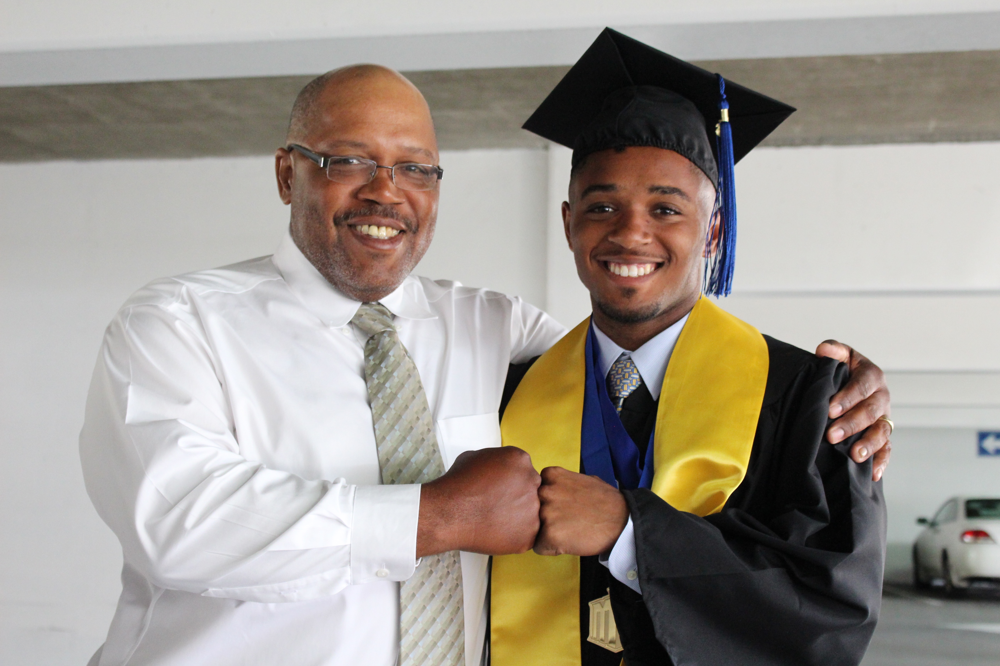
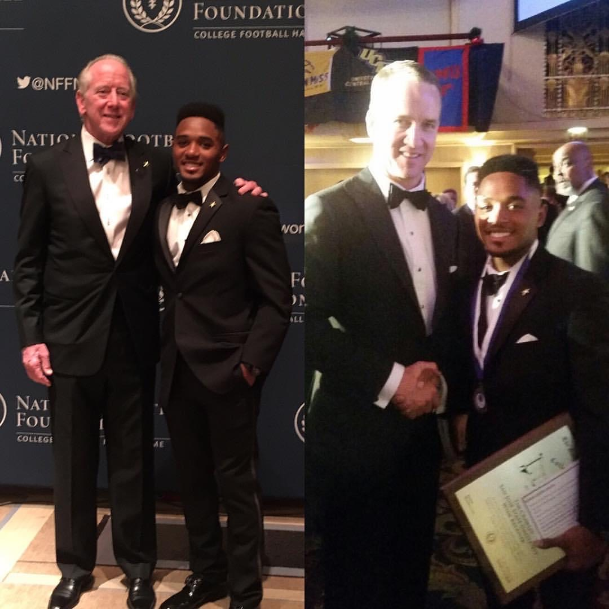

Academic background
At an early age, my parents made it very clear that academics came first. If I wanted to play videogames, I had to make sure all of my homework was completed. Whenever I wanted to hang out with my friends, I had to make sure that I read for at least an hour before. If I EVER wanted to play on an organized sports team, I had to have good grades.
In high school, I attended Bellarmine College Preparatory, a high school in San Jose that is probably known better for its Speech and Debate and Robotics teams than for its sports teams (which is saying something). To this day, my 4 years of high school was the toughest experience of education I've ever gone through.
Lessons I've learned in school
| Resourcefulness | Time-management | Communication skills |
|---|---|---|
| You may not know the answers to every question, but the ability to know who to ask and where to look is an important part of school, as well as in life. Utilizing resources available is an essential skill to learn. | When you have multiple classes with different deadlines for homework, projects, and exams, managing your time well will set you up for success. Planning out your month, week, or even day will keep you organized and reinforce structure amidst chaos. | One of the most invaluable skills I've learned in school is how to interact with other people. Whether you're in a team for a class project, or even when you're in a fairly heated debate with another classmate, being able to effectively communicate your thoughts and ideas, while listening and respecting the thoughts and ideas of others, is very important. |
Although I wasn't the best student, I believe that the skills I mentioned above has and continues to maximize my success, both in and out of the classroom. I don't have a highlight video for any academic achievements, however I do have two pretty cool pictures with Archie and Peyton Manning, at the 2017 NFF National Scholar-Athlete Awards ceremony in New York.
